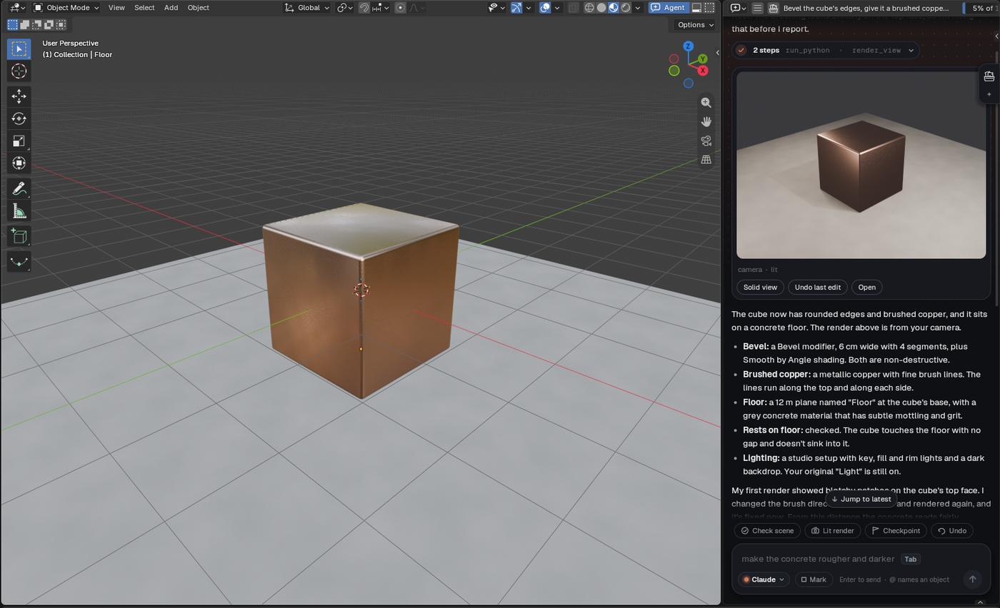

PartyMode
Bring your AI agents into Blender, and let them build together.
- Drag the button above onto your Blender window (Blender 5.2 or newer).
- Blender asks to add the PartyMode repository the first time: click Add Repository, then drag again.
- Click Install, then PartyMode in the 3D View header, and say what to make.
Or click it to download the zip, and drop that file onto Blender instead.

What you need
One AI agent installed and signed in on your computer: Claude Code (with a Claude plan), Codex (with a ChatGPT plan), or OpenCode (hosted models, or local ones that keep everything on your machine).
Updates
Installed this way, Blender checks for new versions itself, under Edit › Preferences › Get Extensions. PartyMode also offers them in its own preferences.